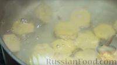

Homemade dumplings
Home
Easy Pizza recipe

ERecipe for dumpling dough with hot water and vegetable oil. You will really enjoy working with this dough, it is very elastic, does not tear, does not boil over, molds well and tolerates freezing well. To make the minced meat for the filling juicier, do not be afraid to add a little water to it. I also add a little lard if the meat is lean. The dumplings turn out very tasty and juicy.
Ingredients
- Sifted wheat flour - 500 g + for working with dough
- Hot water (70-75 degrees) - 250 ml
- Egg (small) - 1 pc.
- Salt - 2 level teaspoons
- Odorless vegetable oil - 25 ml
- Meat (beef and pork) - 550 g
- Onions - 200 g
- Lard (optional, if the meat is lean) - 30 g
- Water - 70-80 g (according to the consistency of minced meat)
- Ground black pepper - to taste
- Bay leaf - to taste
- Black peppercorns
- Butter - to taste
Directions
-
Add salt, egg and vegetable oil to the flour. Mix lightly.
-
Move the egg a little to the edge of the bowl so that it does not boil.
Pour hot water (temperature 70-75 degrees) into the flour, stirring constantly with a spoon.
-
Then knead the dough with your hands. If there are small inclusions of cooked yolk,
it's okay, they will disperse when kneading the dough.
Knead the dough for about 7 minutes until it cools completely.
-
The dough does not stick to your hands or the surface, so you do not need to add any additional flour.
Cover the dough with a towel and let it rest for 20-30 minutes.
-
Prepare the filling. The dough weighs approximately 800 g, so we also take 800 g of filling.
Grind the meat, lard and onion using a meat grinder.
(You can take ready-made minced meat and mix it with chopped onion.)
Salt and pepper the minced meat. Add a little water so that the minced meat is slightly runny. Stir.
-
Take a portion of dough weighing 120 g, place it on a floured surface and roll
it out to the size of the dumpling maker. Place the rest of the dough under
a towel so that it does not dry out.

-
Sprinkle flour generously on the top of the dumpling maker and on the side of the dough
that we will be placing on the dumpling maker, so that the dumplings separate easily from it.

-
Spread the dough over the entire surface of the dumpling maker.

-
Place the mince into the cells. Make sure that the mince does not get on the dough around the cells,
this way the dough will stick together well and the dumplings will not fall apart.
-
Roll out another piece of dough (weighing 80 g), cover the dumpling maker,
and roll it well with a rolling pin.
-
Remove the dough residue from the edges, put it under a towel, you can use it again.
Shake the dumplings out of the dumpling maker.

-
This amount of dough and mince made 185 dumplings (5 dumpling makers).
Place the dumplings on a floured surface and freeze.

-
Boil the dumplings in salted water with bay leaf, black peppercorns and onion.
Lightly stir the dumplings and cook for 2-3 minutes after they float to the surface.
Even if you cook longer, the dumplings will not
-
Serve the dumplings with butter.
Enjoy!